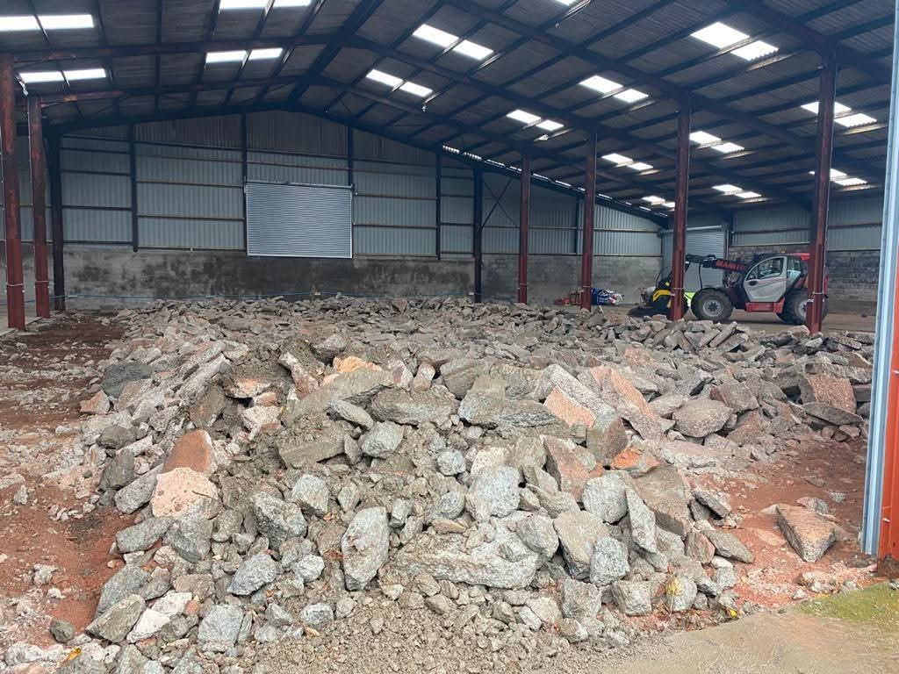
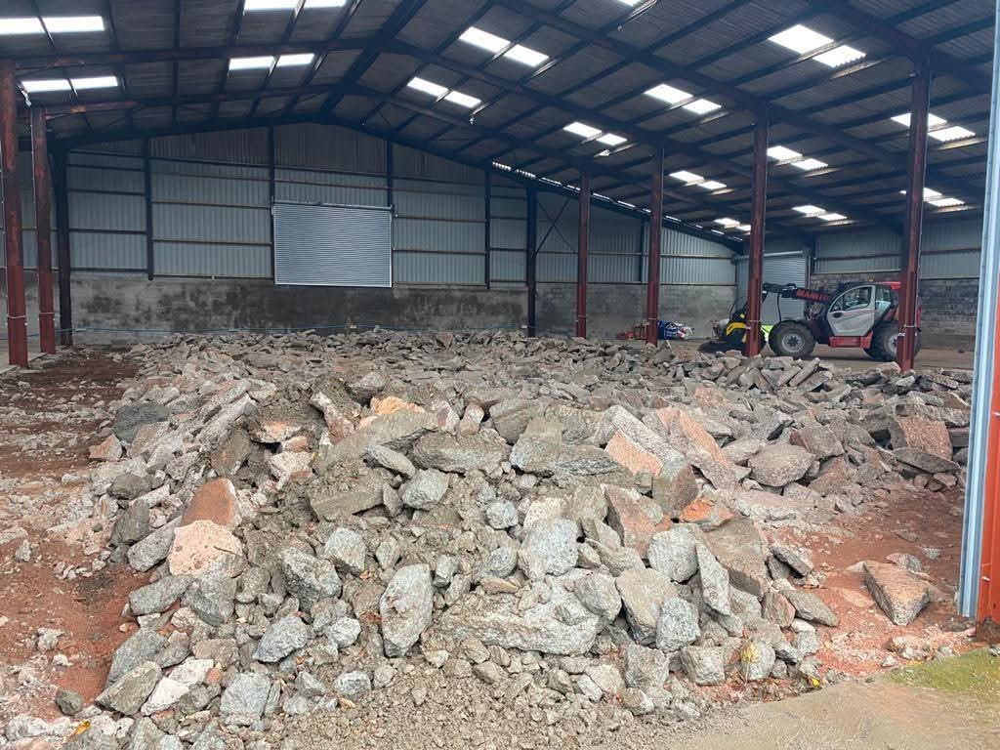

Onsite Crushing & Recycling
Our mobile crushing service brings efficient material processing directly to your site. Using advanced equipment, including our MB crusher bucket on Manitou telehandler, we process concrete, stone, rubble, and slabs on location.
Benefits
- Reduce skip hire and landfill costs
- Environmentally friendly waste reduction
- Immediate reuse of processed materials
- Flexible scheduling and quick turnaround
- Suitable for both indoor and outdoor locations


 
